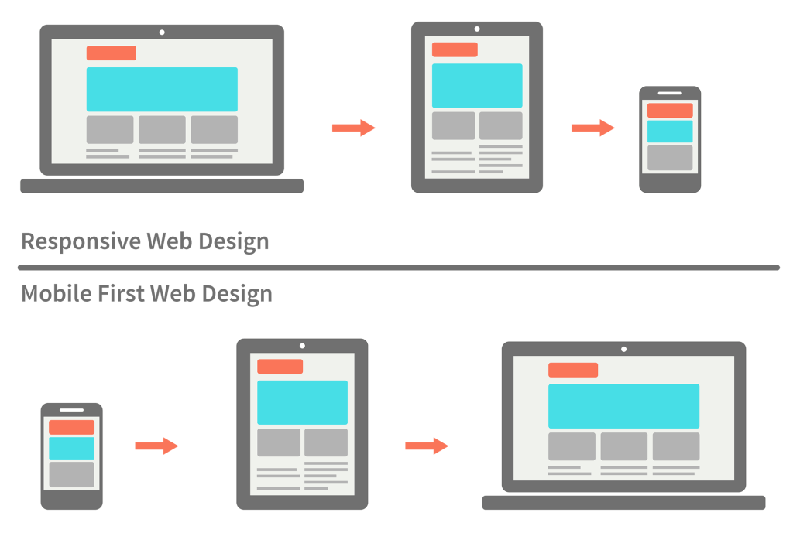

Torna-se necessária uma adaptação aos diversos tamanhos de tela presentes hoje em dia.
Este modelo de desenvolvimento parte da premissa que o código tem que estar preparado para qualquer tamanho de tela.
Ao desenvolvermos até aqui, sempre pensávamos de maneira desktop first, que consiste em desenvolver para desktop e depois formatarmos para mobile e outras telas, porém nota-se que o modelo de desenvolvimento mais simples seria o mobile first, pois o código se comporta melhor nos mobiles por ser um elemento acima do outro, ao transferirmos o site para o desktop o mesmo sofre mudanças maiores, como a formatação das grids e etc.
São predefinições de estados do browser, é possível determinar a formatação da página de acordo com alguma condição estabelecida pelo dev.
@media only screen and (max-width: 600px) {
body {
background-color: lightblue;
}
}
Se o browser ficar com 600px ou menos, a background-color será lightblue. Faça o teste!
Esta predefinição de formatação será utilizada quando o comando "print" for executado.
<link rel="stylesheet" href="print.css" media="print"> /*Adicionar esta predefinição na head.*/
Adicionar esta stylesheet css
/*somente ao acionar a impressão*/
body{
color: black;
font-family: 'Times New Roman', Times, serif;
}
h1{
color: black;
}
img{
display: none;
} /*Evita a impressão de imagens*/
a:after{
content: " ("attr(href)")";
display: inline-block;
margin-left: 20px;
} /*Faz com que os links apareçam como urls*/
/*ctrl+p e veja a formatação*/
Link